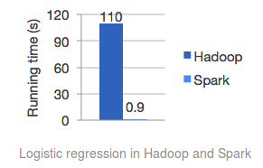

Overview of Apache Spark
Leif Poorman
leif.poorman@gmail.com
Central VA Scala Scholars, 17 April 2014
Apache Spark

- "a fast and general engine for large-scale data processing"
- Disclaimer: Most of what I'm going to show can be gleaned from the Spark website & docs–but I've compressed it, at least
Elevator Pitch
| Fast | Easy |
|  | |
| General | Well-integrated |
| (run on Hadoop 2, YARN, EC2, Mesos, standalone) |
Extra Pitch – Non-Scala
Core Abstraction: RDD
Resilient Distributed Dataset
Can be created from
- "Files" (HDFS, local, S3, HBase; anything Hadoop-readable, really)
- Scala Seq's
- Transformations on other RDDs
Just constructs a computation graph, no work done yet
Can be run by Actions
- This is how to finally get a Scala value back to the driver program (client)
- One Spark program can have many actions
- One action is similar to one MR job
- It's unclear to me what happens when the driver program crashes
Transformations (on RDD[T])
def map[U](f: T => U): RDD[U] def flatMap[U](f: T => TraversableOnce[U]): RDD[U] def filter(f: T => Boolean): RDD[T] def distinct(numPartitions: Int): RDD[T] def distinct(): RDD[T] def zip[U](other: RDD[U]): RDD[(T, U)] def sample(withReplacement: Boolean, fraction: Double, seed: Int): RDD[T] def ++ or union(other: RDD[T]): RDD[T] def groupBy[K](f: T => K): RDD[(K, Seq[T])] def repartition(numPartitions: Int): RDD[T] def coalesce(numPartitions: Int, shuffle: Boolean = false): RDD[T] def glom(): RDD[Array[T]] def pipe(command: String, env: Map[String, String]): RDD[String] def cartesian[U](other: RDD[U]): RDD[(T, U)]
More Transformations (on RDD[(K,V)])
def combineByKey[C](VtoC: V => C, addCV: (C, V) => C, addCC: (C, C) => C): RDD[(K,C)] def foldByKey(zeroValue: V)(func: (V, V) => V): RDD[(K, V)] def reduceByKey(func: (V, V) => V): RDD[(K, V)] def countApproxDistinctByKey(relativeSD: Double = 0.05): RDD[(K, Long)] def groupByKey(): RDD[(K, Seq[V])] def join[W](other: RDD[(K, W)]): RDD[(K, (V, W))] def leftOuterJoin[W](other: RDD[(K, W)]): RDD[(K, (V, Option[W]))] def rightOuterJoin[W](other: RDD[(K, W)]): RDD[(K, (Option[V], W))] def mapValues[U](f: V => U): RDD[(K, U)] def flatMapValues[U](f: V => TraversableOnce[U]): RDD[(K, U)] def cogroup[W1, W2](w1: RDD[(K, W1)], w2: RDD[(K, W2)]): RDD[(K, (Seq[V], Seq[W1], Seq[W2]))] def subtractByKey[W](other: RDD[(K, W)]): RDD[(K, V)] // like set diff def keys: RDD[K] def values: RDD[V] def sortByKey(ascending: Boolean, numPartitions: Int): RDD[(K,V)] def partitionBy(partitioner: Partitioner): RDD[(K, V)]
Even More Transformations (fine-grained control)
def mapPartitions[U]( f: Iterator[T] => Iterator[U], preservesPartitioning: Boolean): RDD[U] def mapPartitionsWithIndex[U]( f: (Int, Iterator[T]) => Iterator[U], preservesPartitioning: Boolean): RDD[U] def mapPartitionsWithContext[U]( f: (TaskContext, Iterator[T]) => Iterator[U], preservesPartitioning: Boolean = false): RDD[U] def mapWith[A, U] // flatMapWith, filterWith (constructA: Int => A, preservesPartitioning: Boolean) (f: (T, A) => U): RDD[U] def filterWith[A](constructA: Int => A)(p: (T, A) => Boolean): RDD[T] def zipPartitions[U, V] (rdd2: RDD[U]) (f: (Iterator[T], Iterator[U]) => Iterator[V]): RDD[V] // Many prev. examples have alternate sigs to control data partitioning def groupBy[K](f: T => K, numPartitions: Int): RDD[(K, Seq[T])] def groupBy[K](f: T => K, p: Partitioner): RDD[(K, Seq[T])]
Actions (RDD[T])
def foreach(f: T => Unit) def collect(): Array[T] def reduce(f: (T, T) => T): T // more general reduce def fold(zero: T)(op: (T, T) => T): T // yet more general def aggregate[U](zero: U)(seqOp: (U, T) => U, combOp: (U, U) => U): U
Actions (RDD[(K,V)])
def reduceByKeyLocally(func: (V, V) => V): Map[K, V] def countByKey(): Map[K, Long] def collectAsMap(): Map[K, V] def lookup(key: K): Seq[V] def saveAsSequenceFile(path: String, codec: CompressionCodec) // approx. type
Actions (RDD[Double])
def sum(): Double def stats(): StatCounter // (count, mean, vars, stdevs) def mean(): Double = stats().mean def variance(): Double = stats().variance def stdev(): Double = stats().stdev def sampleStdev(): Double = stats().sampleStdev def sampleVariance(): Double = stats().sampleVariance def histogram(bucketCount: Int): Pair[Array[Double], Array[Long]] def histogram(buckets: Array[Double], evenBuckets: Boolean): Array[Long]
Even Moar Actions (getting approximate results)
An interesting new feature is the ability to get approximate results within a certain time / error
def countByKeyApprox(timeout: Long, confidence: Double = 0.95) def takeSample(withReplacement: Boolean, num: Int, seed: Int): Array[T] def meanApprox(timeout: Long, confidence: Double = 0.95): PartialResult[BoundedDouble] def sumApprox(timeout: Long, confidence: Double = 0.95): PartialResult[BoundedDouble] // not an action, but appropriate to remind you of it here: def countApproxDistinctByKey(relativeSD: Double = 0.05): RDD[(K, Long)]
RDD Persistence, Shared Variables
"One of the most important capabilities in Spark is persisting (or caching) a dataset in memory across operations"
persist(): RDD[T] // alias: cache() persist(newLevel: StorageLevel): RDD[T] Storagelevel = MEMORY_ONLY | MEMORY_AND_DISK | DISK_ONLY | MEMORY_ONLY_SER | MEMORY_AND_DISK_SER | // java ser. MEMORY_ONLY_2 | MEMORY_AND_DISK_2 | etc // replicate to 2 nodes
"read-only variable cached on each machine…. They can be used, for example, to give every node a copy of a large input dataset in an efficient manner"
SparkContext.broadcast(v)
"Accumulators are variables that are only added to through an associative operation"
val accum = SparkContext.accumulator(0); ... ; accum += hits
Integration
- AWS: can run a Spark job like any other EMR job
- Private Hadoop cluster
- Can run on YARN, and so inherit its tooling
- lots of companies committed to supporting Spark in their stack: Hortonworks, Cloudera, MapR (who partner with Spark creators)
Intro to Extensions
- We haven't even looked at much of the API for managing data (checkpointing, writing your own partitioners, I/O from all the noSQL, etc)
- Whew! After all that, I'm still going to say "Intro to" something?!
- It's a very nice API–but wait, there's more! Many nice extensions have been built on top of it.
Shark
Distributed SQL query engine for Hadoop data
| Feature | Bottom line |
|---|---|
| Execution engine + caching |  |
| ML integration | |
| Columnar store | Data locality -> in-memory materialized views (i.e. more speed) |
| Hive compatibility | Run unmodified Hive queries on existing warehouses. |
MLib
All the machine learning that's fit to distribute. Or at least a lot of it:
- Classification
- Linear SVM, Logistic Regression Both w/ L1 and L2 regularization; use stochastic gradient descent (SGD)
- Multinomial Naive Bayes
- Linear Regression
- Again, L1 and L2 reg. using SGD
- Clustering (parallel kmeans++)
- Collaborative Filtering (Recommendations)
- Alternating Least Squares variant tailored for implicit feedback
- Gradient Descent (to build your own algorithms)
MLib (example code)
data: RDD[LabeledPoint] val aggregated = data.aggregate(...): mutable.Map[Int, (Int, DoubleMatrix)] val C = aggregated.size // Kinds of label val N = aggregated.values.map(_._1).sum // Total sample count val pi = new Array[Double](C) val theta = new Array[Array[Double]](C) val piLogDenom = math.log(N + C * lambda) for ((label, (count, fs)) <- aggregated) { val thetaLogDenom = math.log(fs.sum() + fs.length * lambda) pi(label) = math.log(count + lambda) - piLogDenom theta(label) = fs.toArray.map(f => math.log(f + lambda) - thetaLogDenom) }
Bagel
- Spark implementation of Google's Pregel graph processing framework
- Operates on graph represented as RDD[(VertexID,Vertex)]
- Your algo. implemented as message-passing between vertices:
@serializable class PREdge(val targetId: String) extends Edge @serializable class PRVertex( val id: String, val rank: Double, val outEdges: Seq[Edge], val active: Boolean) extends Vertex @serializable class PRMessage( val targetId: String, val rankShare: Double) extends Message // PageRank algo elided for space (although it's only about 16 lines)
GraphX
"GraphX extends the Spark RDD by introducing the Resilient Distributed Property Graph: a directed multigraph with properties attached to each vertex and edge."
This is the graph computation model to use now: Bagel will eventually be deprecated.
class Graph[VData, EData] { val vertices: VertexRDD[VData] // == RDD[(VertexID, VData)] val edges: EdgeRDD[EData] // == RDD[Edge[EData]] } val graph: Graph[(String, String), String] // [(name, position), person_relationship] // Count all users which are postdocs graph.vertices.filter { case (id, (name, position)) => position == "postdoc" }.count // Count all the edges where src > dst graph.edges.filter(e => e.srcId > e.dstId).count // Graph Operators (Transformations, Actions) val inDegrees: VertexRDD[Int] = graph.inDegrees // and, as you guessed, many, many more.
BlinkDB
"Queries with Bounded Errors and Bounded Response Times on Very Large Data"
| Nice and declarative | Note log scale!! ! |
Spark Streaming
- Oriented around small batches, rather than message-at-a-time like some other frameworks
- Central abstraction is a DStream, internally a Seq of RDDs sampled at some time interval
- Ingest from Kafka, Flume, HDFS, ZeroMQ, sockets, Twitter
// transform batchwise, e.g. for joining with small static data def transform[U](transformFunc: RDD[T] => RDD[U]): DStream[U] // sliding window; windowDuration multiple of originial duration def window(windowDuration: Duration): DStream[T] def groupByKeyAndWindow(windowDuration: Duration): DStream[(K, Seq[V])] // etc. // DStream[(K, V)]; update state S using new values for key; running totals, etc. def updateStateByKey[S](f: (Seq[V], Option[S]) => Option[S]): DStream[(K, S)]
Acknowledgements
- Berkeley AmpLab, for focusing on usability and documentation as
well as advanced alien technology
- "What this world needs is a good five-dollar plasma weapon" 1
- Databricks, the commercial Spark support spin-off 2
- Phrase I assume was used during Spark design discussions.
- Shut up and take my money!